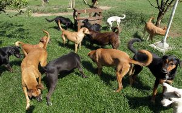
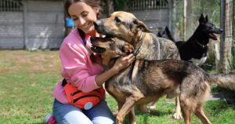

Sobre Nós
A AdoPet ONG é uma organização sem fins lucrativos dedicada ao resgate, cuidado e adoção de animais abandonados. Fundada em 2010, nossa missão é proporcionar uma vida melhor para cães e gatos que foram negligenciados ou maltratados, encontrando lares amorosos para cada um deles.
Nossa equipe é composta por voluntários apaixonados que trabalham incansavelmente para garantir o bem-estar dos animais sob nossos cuidados. Oferecemos serviços de resgate, cuidados veterinários, socialização e treinamento, além de promover campanhas de conscientização sobre a importância da adoção responsável.
Ao longo dos anos, conseguimos transformar a vida de centenas de animais e suas novas famílias. Acreditamos que cada animal merece uma segunda chance e estamos comprometidos em fazer a diferença, um resgate de cada vez.
Junte-se a nós nessa missão! Seja adotando, voluntariando-se ou apoiando nossas campanhas, você pode ajudar a mudar vidas e construir um futuro melhor para os animais em necessidade.
 